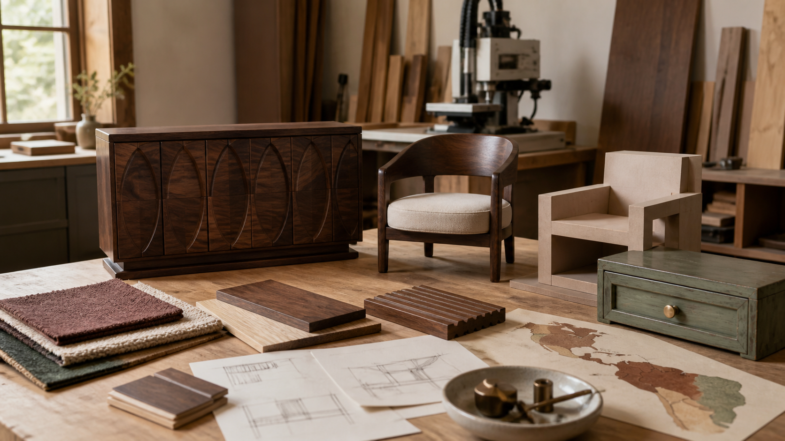

2026.08.19 가구·인테리어·목공 일일 트렌드

오늘의 흐름은 새것처럼 보이는 가구보다 손맛, 이력, 구조적 존재감이 있는 가구로 기울고 있습니다. 조각 장식과 어두운 목재, 오래된 가구의 재도장, 건축에서 출발한 모듈형 컬렉션은 모두 '평평하고 무난한 제품'의 반대편에 있습니다. 동시에 멕시코 목공 전시와 북미 관세 변수는 공방이 디자인 감각만이 아니라 소재 조달과 가격 변동까지 같이 설명해야 한다는 신호입니다.
1. 조각적 원목과 어두운 목재가 다시 돌아오고 있습니다
Southern Living은 2026년 8월 18일 '다시 볼 줄 몰랐던' 네 가지 가구 흐름으로 장식 조각이 있는 목재 가구, 어두운 무드의 목재, 곡선과 부드러운 모서리, 세련된 리클라이닝 소파를 꼽았습니다. 기사에서 디자이너들은 대량생산품보다 이력과 수공예감이 있는 가구를 찾는 소비자가 늘고, 에스프레소 스테인 오크·월넛·에보나이즈 마감이 밝은 직물이나 석재, 브러시드 브라스와 조합될 때 현재적으로 보인다고 설명합니다.
왜 중요한가. 목간이 '심플한 원목'만 강조하면 시장의 방향을 좁게 읽는 셈입니다. 수납장 문짝의 얕은 조각, 곡선형 앞모서리, 어두운 오일·스테인 샘플처럼 손맛을 보여주는 옵션을 준비해야 합니다. 단, 어두운 목재는 먼지와 스크래치가 더 잘 보이고 공간을 무겁게 만들 수 있으므로 밝은 패브릭, 여백, 조명 계획과 함께 제안해야 합니다.
2. 페인티드 가구의 복귀는 '낡은 가구를 버리지 않는 상품기획'을 요구합니다
Good Housekeeping은 2026년 8월 18일 페인티드 가구가 현대적으로 돌아오고 있다고 보도했습니다. 디자이너들은 완벽하게 맞춘 새 가구 세트보다 개인적이고 수집된 느낌의 집을 원하는 흐름이 커졌고, 콘솔·나이트스탠드·드레서·사이드보드·책장·다이닝 체어·빌트인·앤티크 허치가 재도장 대상이 된다고 설명합니다. 현대적으로 보이게 하려면 비율이 좋은 가구를 고르고, 과한 빈티지 워싱보다 깔끔한 도장과 새 하드웨어, 흙빛 녹색·따뜻한 크림·짙은 파랑·리치 브라운을 쓰는 방식을 권합니다.
왜 중요한가. 공방 운영 관점에서는 새 제품 판매만이 답이 아닙니다. 기존 원목가구의 부분 도장, 손잡이 교체, 표면 보수, 구조 보강을 묶은 리프레시 서비스를 만들 수 있습니다. 다만 페인트는 나뭇결을 가리므로 전부 칠하기보다 프레임은 원목, 문짝이나 서랍 앞판만 도장하는 식의 하이브리드 옵션이 목간의 정체성과 더 맞습니다.
3. Made x Barbican은 건축 아카이브가 접근 가능한 가구 컬렉션으로 바뀌는 사례입니다
Wallpaper*는 2026년 8월 17일 Made와 런던 Barbican Centre의 23피스 가구·조명 컬렉션을 소개했습니다. 컬렉션은 브루털리즘 건축의 콘크리트 질감, 모듈식 배치, 격자 구조, 반원형 모티프, 곡선 실루엣을 소파, 다이닝 가구, 조명, 러그, 쿠션으로 옮겼습니다. 기사에 따르면 스테인드 애쉬 사이드보드, 모스 그린과 버건디 계열, 그래픽 러그와 조명은 Barbican의 원래 쇼홈과 공용공간에서 색과 형태를 가져왔습니다.
왜 중요한가. 좋은 가구 이야기는 제품 사진만으로 끝나지 않습니다. 목간도 한옥의 기둥-보 결구, 툇마루, 온돌 좌식 생활, 창호 격자 같은 건축적 언어를 벤치, 낮은 테이블, 수납장 문살, 조명 받침 구조로 번역할 수 있습니다. 핵심은 전통 모티프를 표면 장식으로 붙이는 것이 아니라 비례, 반복, 사용 동선으로 바꾸는 일입니다.
4. Tecno Mueble 개막은 라틴아메리카 목공 공급망과 장비 소싱을 볼 기회입니다
Tecno Mueble Internacional 공식 사이트는 2026년 행사에서 13,000㎡ 이상의 전시장, 공급·기계·텍스타일·국제관, 200개 이상 업계 리더, 멕시코와 중앙아메리카의 6,000명 이상 전문 바이어를 내세웁니다. Southern Forest Products Association 일정도 Tecno Mueble 2026이 2026년 8월 19일부터 22일까지 멕시코 과달라하라에서 열린다고 확인합니다.
왜 중요한가. 한국 소규모 공방이 당장 멕시코 전시를 방문하지 않더라도, 전시 카테고리는 무엇을 봐야 하는지 알려줍니다. 원목과 보드, 직물, 하드웨어, CNC·엣지·샌딩 장비를 따로 보지 말고 하나의 제작 원가 체계로 봐야 합니다. 특히 중남미 시장은 미국·아시아 사이 공급망이 재편될 때 목재, 부자재, 가구 완제품의 가격 기준을 흔들 수 있습니다.
- Tecno Mueble Internacional official site · 2026.08.19 행사 확인
- Southern Forest Products Association, Events Calendar · 2026.08.19-22 일정 확인
5. 캐나다산 가구·목재 제품 관세 변수는 견적 유효기간을 짧게 가져가야 한다는 경고입니다
Furniture Today는 2026년 7월 21일 캐나다산 가구를 포함한 약 200억 달러 규모 수입품에 50% 미국 관세가 2026년 8월 19일부터 적용될 예정이라고 보도했습니다. 8월 19일에는 MarketWatch와 Axios 등 주요 매체가 미국과 캐나다가 문서 확정을 전제로 관세 시행을 사흘 미뤘다고 전했습니다. 즉, 오늘의 핵심은 '관세가 끝났다'가 아니라 수입 가구·보드·부자재 가격이 며칠 단위 협상으로 흔들릴 수 있다는 점입니다.
왜 중요한가. 목간의 견적서에는 원목, 합판, 하드웨어, 수입 부자재가 들어갑니다. 관세와 환율이 흔들릴 때 한 달짜리 고정 견적을 남발하면 손실이 납니다. 고가 주문은 견적 유효기간, 소재 대체 조건, 발주 시점 이후 가격 변동 조항을 넣고, 고객에게는 국산재·북미재·동남아재·패널 대체안의 가격 차이를 투명하게 보여줘야 합니다.
- Furniture Today, New 50% tariff on Canadian imports includes furniture · 2026.07.21, 2026.08.19 시행 예정 이슈
- Axios, Trump postpones 50% tariffs on Canadian goods · 2026.08.19
오늘의 실무 인사이트
- 어두운 목재 옵션은 샘플 보드로 먼저 판다. 월넛, 에보나이즈 애쉬, 짙은 오크 스테인은 사진보다 실제 공간 조도에서 차이가 크므로 손바닥 크기 샘플과 밝은 패브릭 조합을 함께 보여줘야 합니다.
- 리폼·도장 서비스는 범위를 좁혀야 돈이 남는다. 모든 낡은 가구를 받기보다 구조가 좋은 수납장, 의자, 책장으로 한정하고, 구조 보강·샌딩·도장·하드웨어 교체를 표준 패키지로 나누는 편이 안전합니다.
- 전통 모티프는 표면 장식보다 구조 언어로 옮긴다. 한옥 문살을 그대로 붙이는 대신 반복 격자, 낮은 좌식 비례, 툇마루식 가장자리, 기둥-보 리듬을 가구 치수와 결구로 번역해야 촌스럽지 않습니다.
- 견적서에는 소재 가격 변동 조항을 넣는다. 수입재가 들어가는 주문은 견적 유효기간과 대체 소재 선택지를 명시해야 관세·환율 뉴스가 곧바로 마진 손실로 이어지는 일을 줄일 수 있습니다.